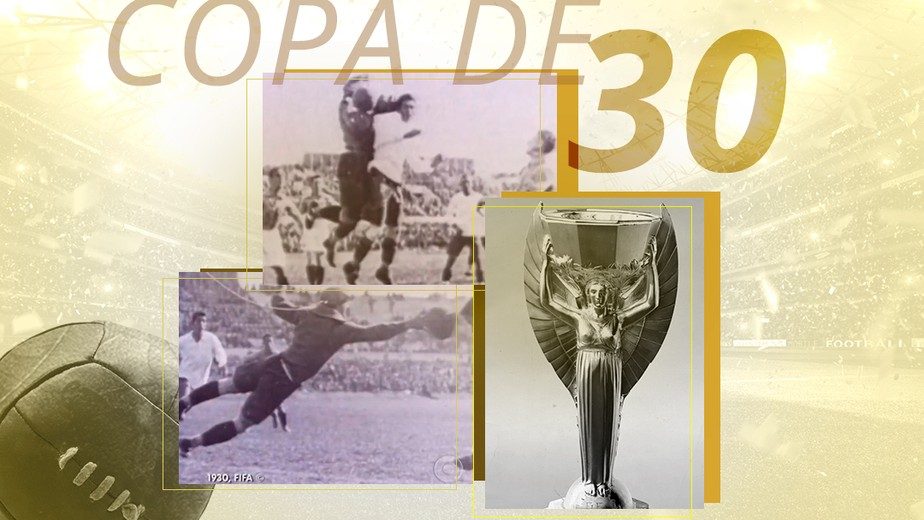
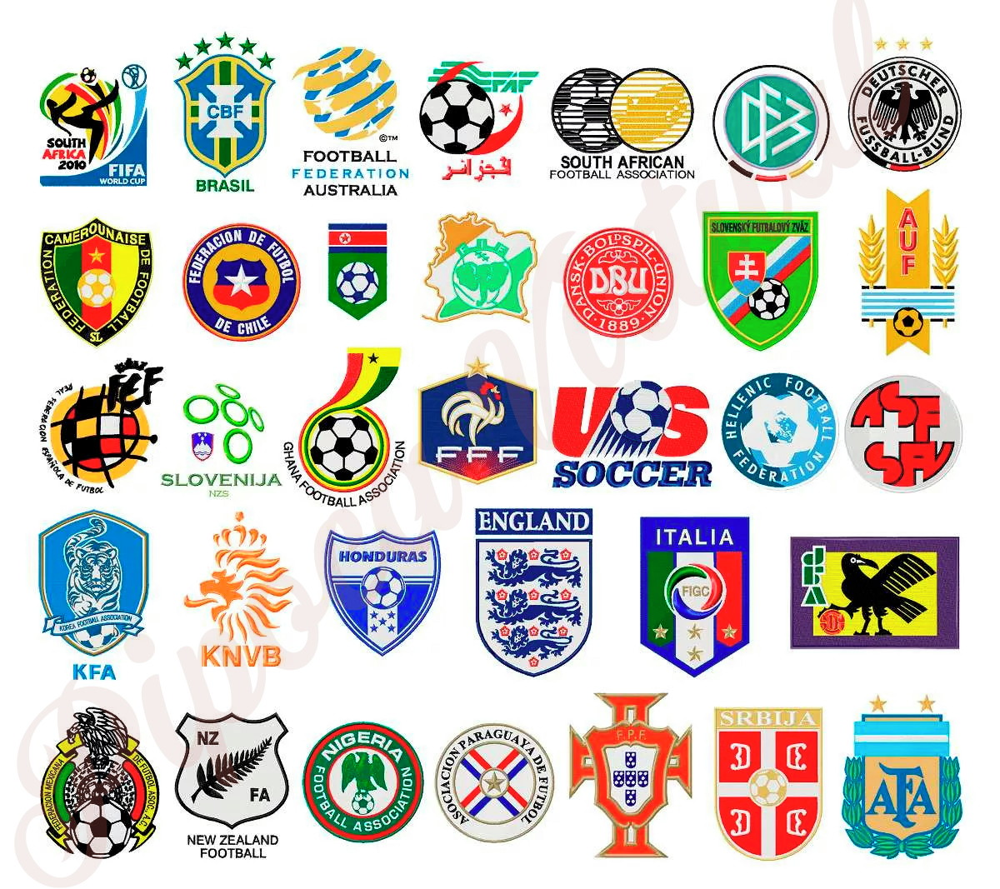
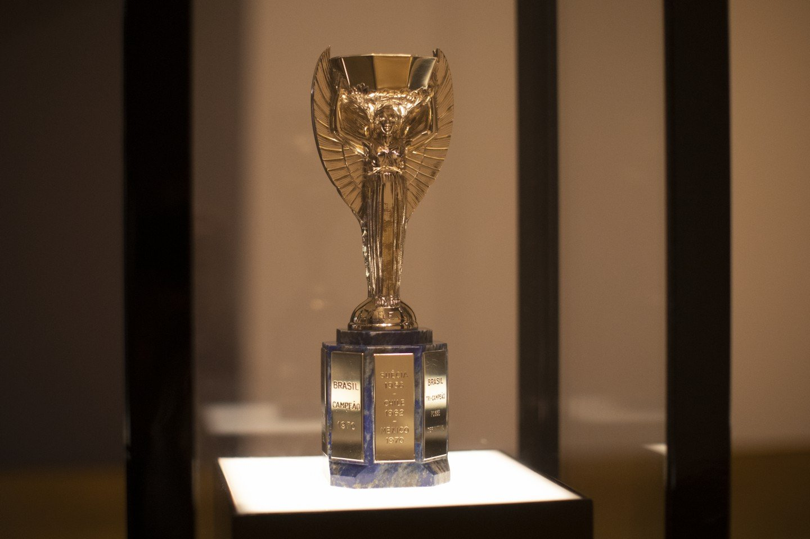
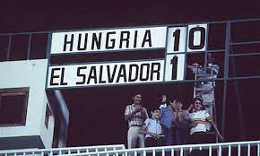
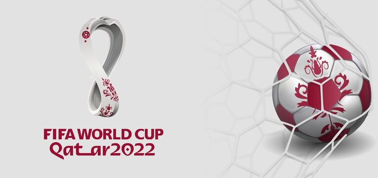

Mundial de Futebol, mais conhecido no brasil por Copa do Mundo, o campeonato mais esperado pelo os torcedores de todo o mundo.
O QUE É COPA DO MUNDO.
É uma competição internacional de futebol que ocorre a cada 4 anos, com exeção de 1942 e 1946, quando não foi realizado por conta da Segunda Guerra Mundial que estav ocorrendo nesta época.
QUEM FOI O CRIADOR DA COPA DO MUNDO.

Essa ccompetição,foi criada em 1928 na França, pelo francês Jules Rimet, e está aberta a todaas federações reconhecidas pela FIFA (Federação internacional de futebol associado).
QUANDO FOI A PRIMEIRA EDIÇÃO DESTE CAMPEONATO.
Em 1930 deram início ao campeonato, que foi realizado no Uruguai: Por serem escolhidos como sede. Está decisão ocorreu na Espanha, Barcelona dia 18/07/1929, um ano antes da primeira edição ser realizada.
O ANTIGO NOME DA TAÇA JULES RIMET.
faz referência a seu criador, mas esta versão só durou de 1930 a 1970, após estes anos, decidiram que a taça não se chamaria mais mais assim, e logo após ficou conhecida como a tal famosa Copa do Mundo.
A MAIOR GOLEADA EM UMA COPA DO MUNDO.
Contuddo, o maior número de gols em uma partida ficou na história das copas, isto ocorreu a quarenta anos atrás, na edição de 1982 disputada na Espanha. Na primeira rodada do Grupo C, a Hungria El Salvador por 10 a 1. o jogo foi desputado no dia 15 de junho no Nuevo Estádio Nuevo, em Elche.
COPA DE 2022, A VIGÉSIMA SEGUNDA EDIÇÃO.
Está vai ser a primeira a ser realizada no Oriente Médio e a última a ter formato de 32 equipes, já que a competição terá uma mudança no formarto e número de equipes na edição de 2026,onde será sediada no Canadá, Estados Unidos e México, passando para 48 equipes.